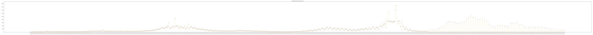
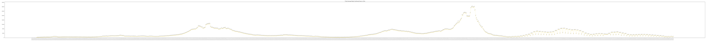

Total confirmed cases:
Newly confirmed cases: 
7-day Moving Average: 
Number of ICU Admissions:
Number of Hospitalizations:
(To view the original image: right click on a figure and choose "Open Image in New Tab")